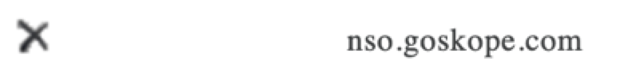
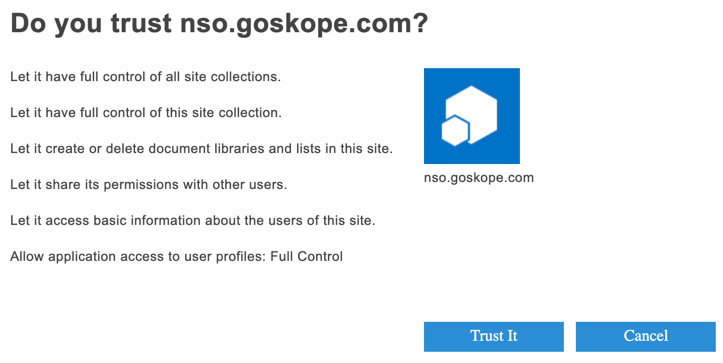

Manual Installation of the Netskope Introspection v2 App for Microsoft Office 365 OneDrive Instance
After installing the v2 app, verify that the installation was successful. To verify, follow the instructions below:
Log in to https://login.microsoftonline.com/ as a global administrator.
Navigate to Admin > Admin centers> SharePoint.
On the left navigation pane, click More features.
Under Apps, click Open.
On the Apps page, click App permissions.
Under App Display Name, check if the nso.goskope.com app exists.

If you do not see the nso.goskope.com entry, the v2 app was not installed successfully. You must manually install the v2 app. To do so, follow the instructions below:
Log in to https://login.microsoftonline.com/ as a global administrator.
Navigate to Admin > Admin centers> SharePoint.
On the web browser URL tab, type <tenant>-admin.sharepoint.com/_layouts/15/appinv.aspx. Replace the <tenant> with your company's SharePoint domain name. For example, if your SharePoint admin page URL is https://sumoskope-admin.sharepoint.com/, enter https://sumoskope-admin.sharepoint.com/_layouts/15/appinv.aspx. The following page opens:

Under App Id, enter 2cf570c6-4e3d-4822-87ab-d73731b4c0e6 and click Lookup. The page gets populated with the following information:

Under Permission Request XML, enter the following XML code:
<AppPermissionRequests AllowAppOnlyPolicy="true"> <AppPermissionRequest Scope="http://sharepoint/social/tenant" Right="FullControl" /><AppPermissionRequest Scope="http://sharepoint/content/tenant" Right="FullControl" /><AppPermissionRequest Scope="http://sharepoint/content/sitecollection" Right="FullControl" /><AppPermissionRequest Scope="http://sharepoint/content/sitecollection/web" Right="Manage" /><AppPermissionRequest Scope="http://sharepoint/content/sitecollection/web/list" Right="Manage" /></AppPermissionRequests>
Click Create.
On the trust page, keep the drop-down list unchanged and click Trust.

This will create the app permissions necessary for the Netskope Introspection v2 app to access the SharePoint APIs. To verify that the app is installed successfully, follow the instructions at the beginning of the article.
At this point, the Netskope Introspection v2 app is successfully installed. Next, you should set up the Microsoft Office 365 app instance in the Netskope UI.